5ans de prévisionnel
1travail individuel
3exercices analysés en détail
Le contexte et la commande
- SAE S4.02 : démontrer seul la faisabilité financière d’un projet entrepreneurial sur cinq ans, sans appui d’équipe.
- Exercice de synthèse de la deuxième année : toutes les notions de gestion financière y sont mobilisées simultanément.
- Livrable attendu : un dossier financier complet, défendable devant un banquier.
La problématique
Démontrer la faisabilité d’un projet entrepreneurial en mobilisant l’analyse financière, la modélisation, la stratégie, la rentabilité et la gestion des risques.
Les états financiers
- Bilan d’ouverture, comptes de résultat et bilans des trois premiers exercices, construits sous Excel puis commentés poste par poste.
- Chaque montant est justifié : 2 000 € de frais d’établissement, 50 000 € de développement de l’application, 10 000 € de serveurs, 5 000 € de licences et de logiciels.
- Les soldes intermédiaires de gestion accompagnent chaque exercice et racontent la trajectoire : une marge commerciale élevée dès l’année N — 91,73 % du chiffre d’affaires — mais un excédent brut d’exploitation négatif à −61,18 %, qui redevient positif à 5,80 % en N+1, pour un résultat net positif de 3,51 % en N+2.
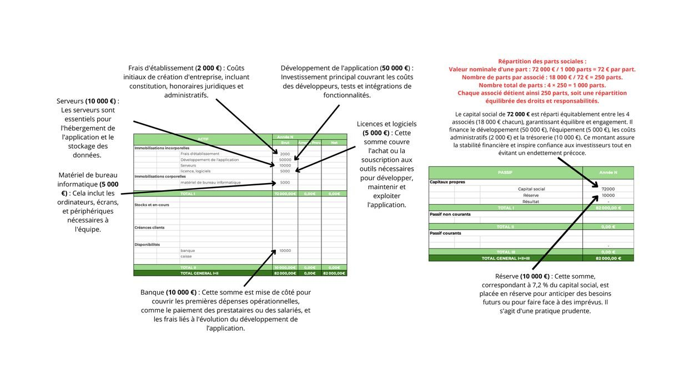
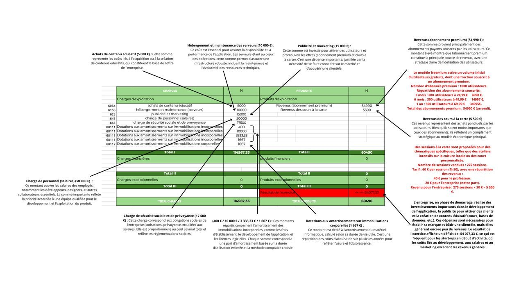
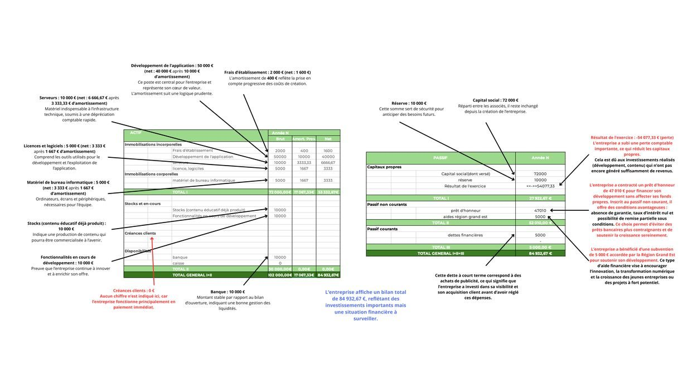
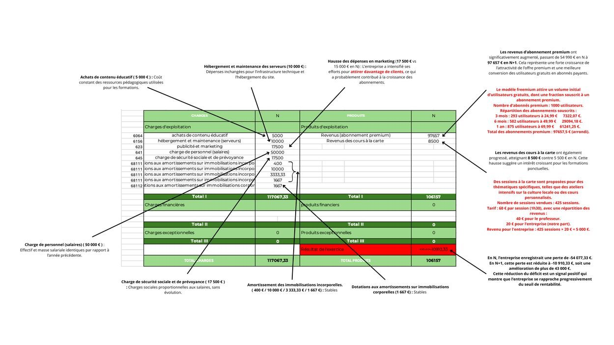
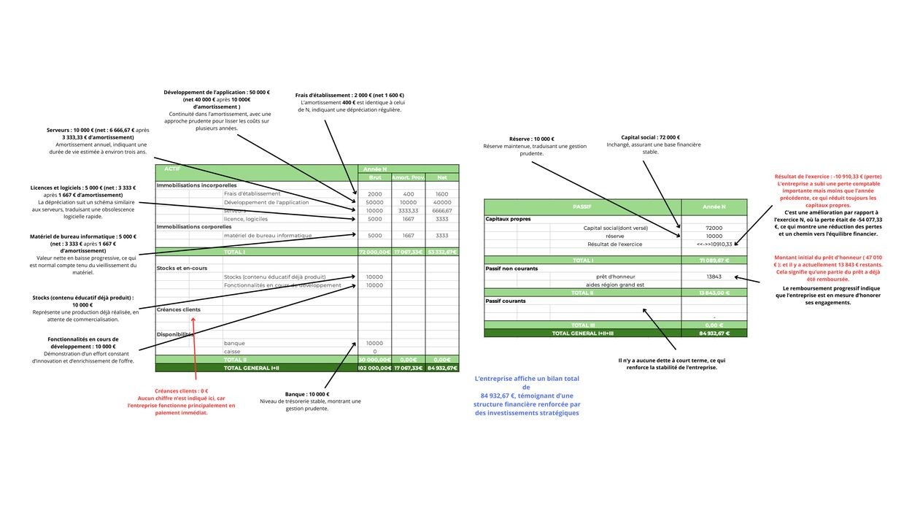
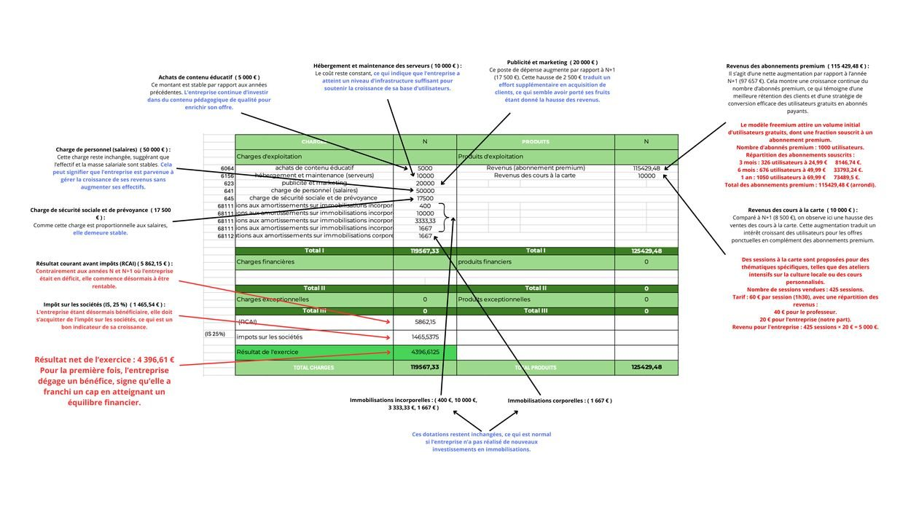
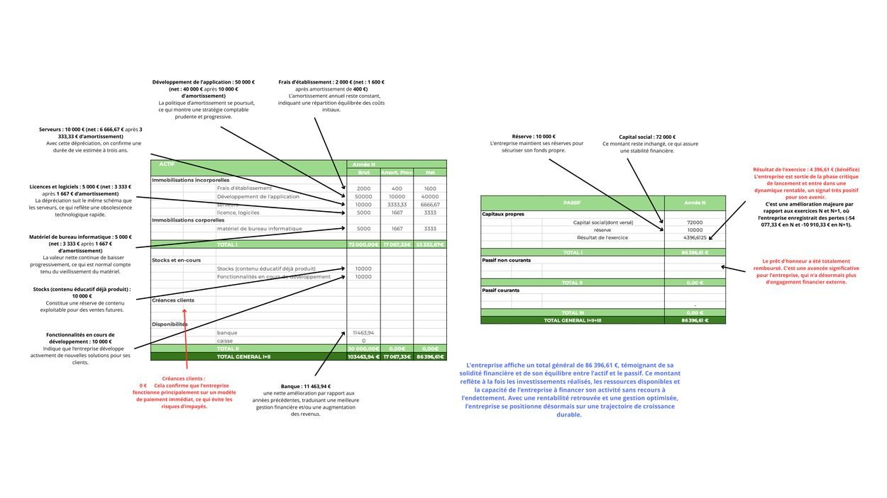
La structure financière
- Le plan d’investissement détaille les immobilisations et leurs amortissements sur les trois exercices ; le développement de l’application en représente à lui seul 69 %.
- Le plan de financement vérifie que des ressources stables couvrent ces investissements : capital social de 72 000 €, réserve de 10 000 €, prêt d’honneur de 47 010 € et aide de la Région Grand Est de 5 000 €.
- Les charges de personnel sont chiffrées à 67 500 € par an, soit 17 500 € de coût annuel réparti entre quatre associés.
- Le bilan fonctionnel complète la lecture : fonds de roulement, besoin en fonds de roulement et trésorerie nette suivis d’un exercice à l’autre.


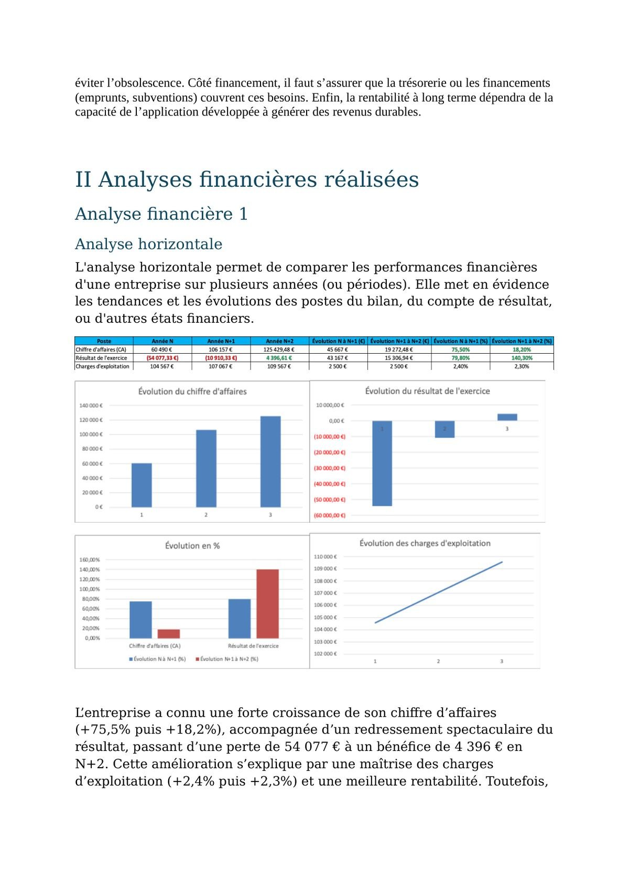
Les analyses menées
- Analyse horizontale : un chiffre d’affaires en hausse de 75,5 % puis de 18,2 %, et un résultat qui passe d’une perte de 54 077 € à un bénéfice de 4 396 €.
- Analyse verticale : 64,8 % d’immobilisations incorporelles à l’actif, et des charges d’exploitation à 79,7 % du chiffre d’affaires qui limitent le résultat net à 3,5 %.
- Ratios : rentabilité économique de −62,17 % à +6,37 %, ratio d’endettement ramené de 168,36 % à 0 %, capacité d’autofinancement de −37 410 € à +21 063 €, coût moyen pondéré du capital à 6,1 % en N+2.
- Seuil de rentabilité et point mort : le nombre de jours nécessaires pour couvrir les charges tombe de 689 à 277.


La projection et le pilotage par la donnée
- Taux de réinvestissement, rentabilité des investissements, cash-flow libre et analyse de sensibilité : trois scénarios testés, avec coût d’acquisition client et valeur vie client.
- L’analyse SWOT financière clôt le diagnostic : un fonds de roulement qui s’améliore et une rentabilité qui redevient positive, face à un besoin en fonds de roulement en hausse et à des flux de trésorerie encore irréguliers.
- Les projections des exercices suivants tablent sur une croissance maîtrisée, une rentabilité consolidée et la diversification des sources de revenus.
- Le prévisionnel ne repose pas sur une hypothèse de coin de table : il s’appuie sur le fichier des utilisateurs, traité par tableau croisé dynamique — 82 302 lignes, 4 802 abonnés payants soit 5,8 % de conversion, répartis sur 14 pays et 9 langues, dont la moitié en abonnement annuel.


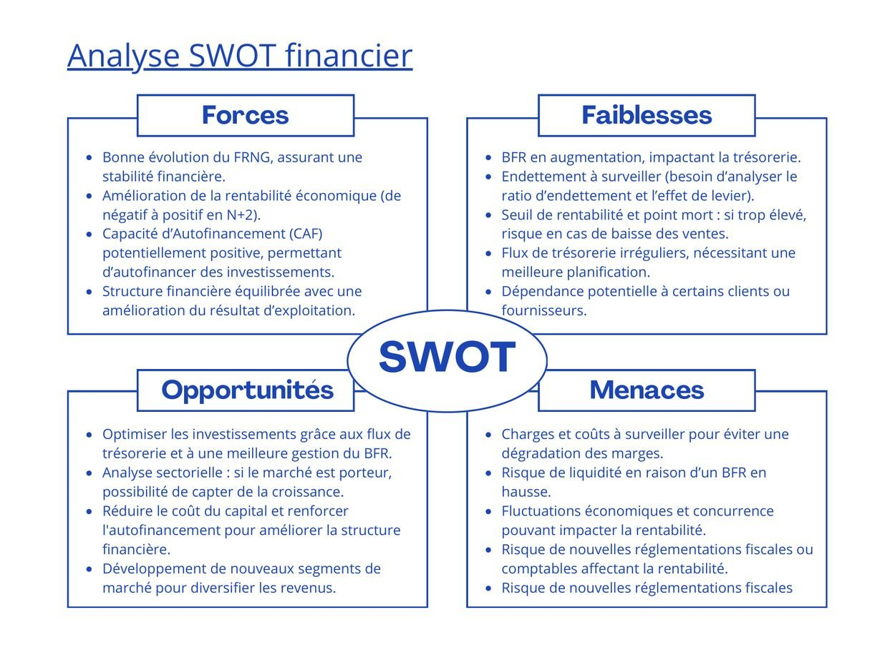
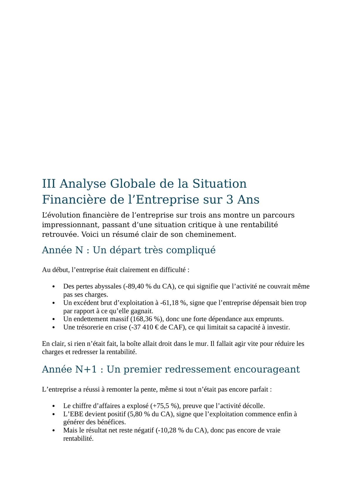
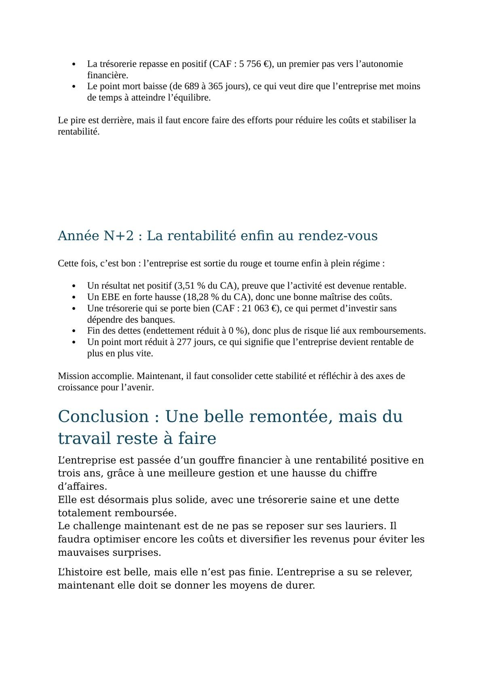
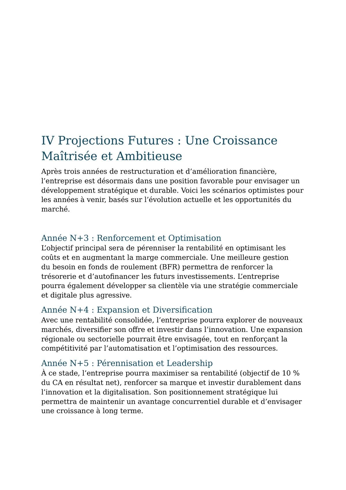
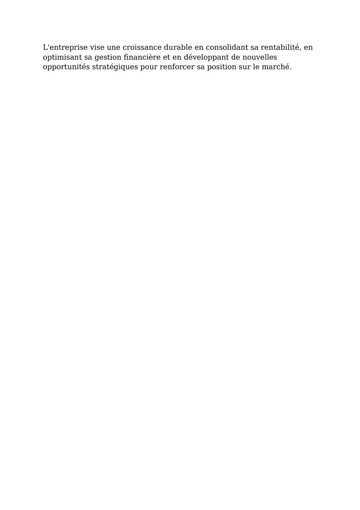
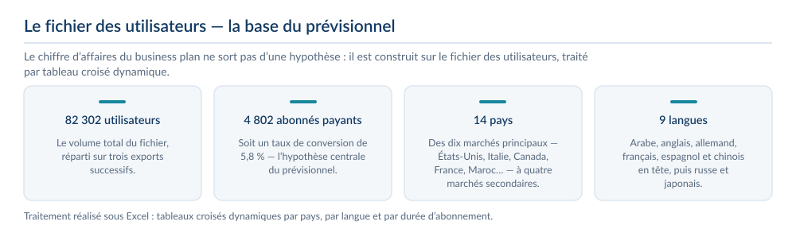
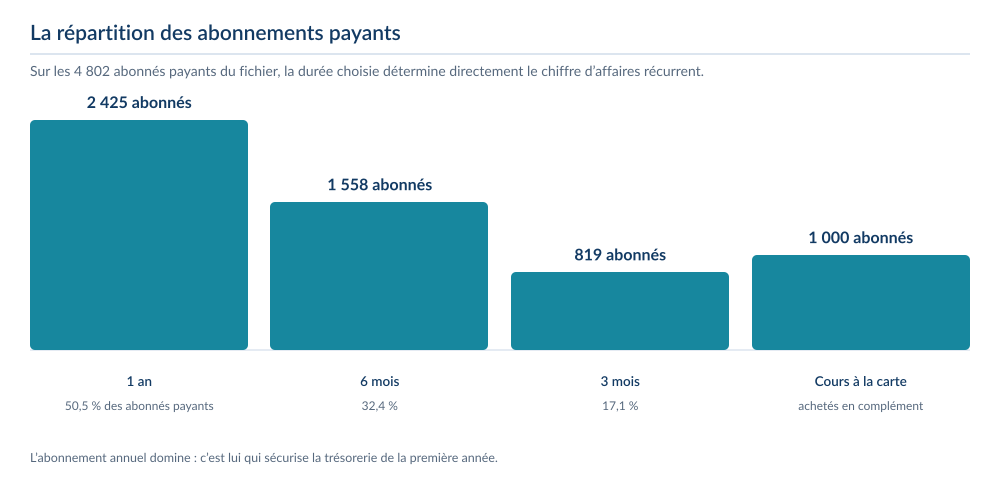
Ce que j’ai produit
- Plan d’investissement et de financement, avec structure de capital et hypothèses justifiées.
- Comptes de résultat prévisionnels, bilans d’ouverture et de clôture sur trois exercices.
- Seuil de rentabilité calculé et suivi année par année.
- Analyse de l’équilibre financier : fonds de roulement net global, besoin en fonds de roulement et trésorerie nette.
- Ratios de structure et de rentabilité, retour sur investissement et coût moyen du capital.
Ce que j’en retire
- Lire un bilan et un compte de résultat comme un tout cohérent, pas comme des tableaux isolés.
- Justifier chaque hypothèse chiffrée plutôt que de la poser arbitrairement.
- Travailler en autonomie complète, avec la rigueur qu’exige un document financier.
Outils et méthodes mobilisés
ExcelSeuil de rentabilitéFRNG et BFRRatios financiersPlan de trésorerie